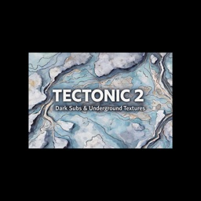

How to Use TECTONIC 2 for Low-End Pressure

TECTONIC 2 works best when the low end feels present, not loud.
1. Keep it controlled
Start lower than you think. Low-end pressure works when it stays steady and does not take over the mix.
2. Use it before the impact
Bring it in early and let it build slowly. That makes the next section feel heavier without needing more layers.
3. Pair it with sparse top detail
A little noise or texture on top is enough. The low end should carry the weight. Everything else should stay out of the way.
The main idea is simple: pressure comes from control, not volume.